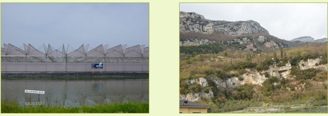

Highlights
Regional typology
Each region has its own strengths and weaknesses or its threats and opportunities
for the future. Looking at the maps for the future with the Eururalis 'explore
your future' tool shows the regional differences already very sharp. To upscale
the results and to be able to draw more general conclusions, we chose a simple
regional typology to describe the regions characteristics to be able to go into
the meaning of the results for the regions. This typology is based on land-use
and the economic significance of agriculture. We first distinguished between
Peri-Urban regions, Nature regions and Agriculture regions. In the latter category
we made a refinement based on the contribution of agriculture to the economy
of the region. So we distinguished agricultural regions with high and medium
or low value added.
In the next sheets each of these regions and their main characteristic are highlighted.
